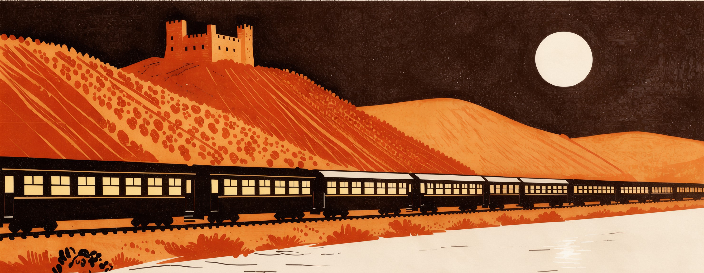

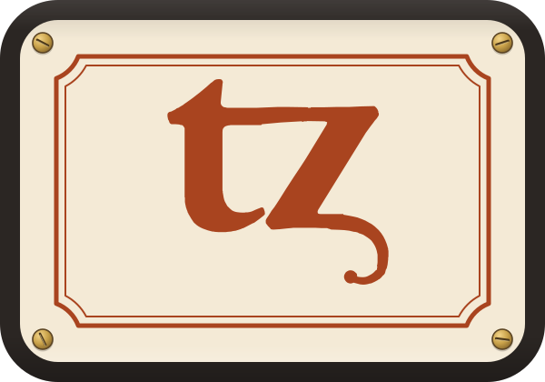
Nachtzug
Sequencer · Synthesizer
Bedienungsanleitung
Für Linux, macOS und Windows
NZ · 001


Willkommen im Nachtzug! Nachtzug ist eine kleine Musikmaschine für Musik aus sich wiederholenden Synthesizer-Patterns: quietschende Acid-Basslines, rollende Sequenzen der Berliner Schule, langsame Klangflächen und einfache Melodien obendrauf, getragen von einem Drummer, der nie müde wird.
Man muss dafür weder Keyboard spielen können noch Musiktheorie kennen, denn jede Note, die sich in Nachtzug setzen lässt, gehört zur Tonleiter des Songs – falsch klingen kann also eigentlich nichts. Jede Spur kann sich außerdem eigene Ideen ausdenken, der Drummer spielt ganz von selbst, und jede Änderung wartet, während die Musik läuft, höflich auf den nächsten Takt.
Kaputt machen kann man übrigens nichts: Jede Änderung lässt sich (so oft wie nötig) rückgängig machen, und Nachtzug legt nebenbei eine Ersatzkopie an.
Dieses Heft folgt der Maschine von der Frontplatte nach innen. Es empfiehlt sich, zuallererst Kapitel 1 zu lesen, denn dort läuft – nach gerade einmal zehn Minuten – bereits ein ganz eigener Song. Die übrigen Kapitel können übrigens – abhängig davon, über welchen Teil des Programmes man mehr wissen möchte – in praktisch komplett beliebiger Reihenfolge gelesen werden.
Fast jeder Knopf, jeder Regler und jede Ecke des Fensters erklärt sich übrigens selbst: Ruht die Maus darauf, erscheint eine kurze Beschreibung – sowohl neben dem Zeiger als auch in der Statuszeile unten im Fenster.
Gute Reise!
Nachtzug öffnet sich als ein einziges Fenster, das – ganz ähnlich wie die Front eines Hardware-Instruments – in feste Bereiche aufgeteilt ist. Oben liegt die Hauptbedienung. Darunter zeigt der Inspektor links die Spur, an der gerade gearbeitet wird, die Zeitleiste zeigt den ganzen Song, und die Reiter Noten, Sound und Mixer darunter zeigen schließlich alle Einzelheiten.
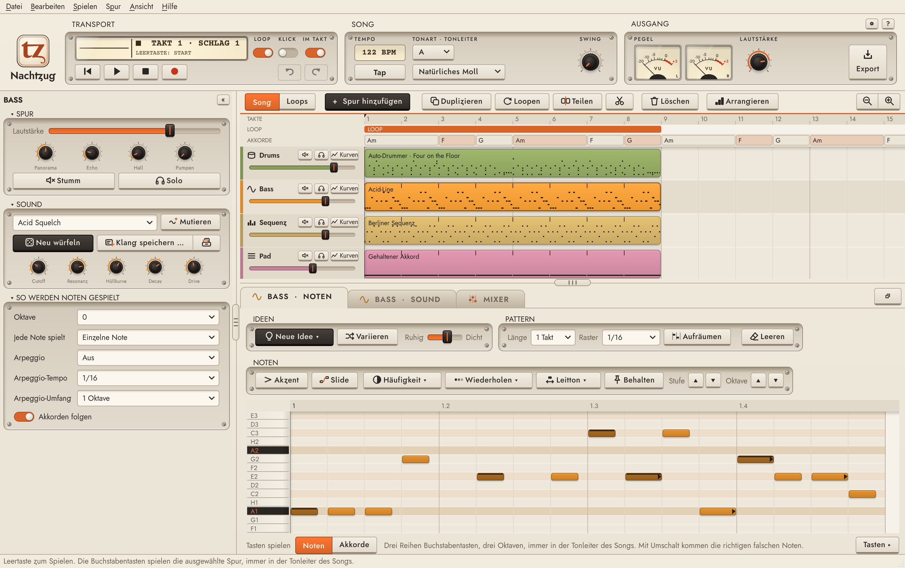
Auf einem großen Bildschirm passt alles bequem nebeneinander, auf einem Laptop kann es dagegen mitunter etwas eng werden. Das Fenster lässt sich deshalb ganz nach Bedarf aufräumen (Nachtzug merkt sich übrigens alles für das nächste Mal).
Ist das ganze Fenster trotzdem zu groß oder zu klein, hilft die Einstellung Größe (9.3).
Sechs Schritte, etwa zehn Minuten. Sobald Nachtzug startet, wartet bereits ein Demo-Song – zuallererst wird also einfach zugehört, danach wird der Song Stück für Stück verändert.
Beim allerersten Start fragt Nachtzug, welche Sprache benutzt werden soll und wie man anfangen möchte. Ich bin neu dabei gibt dem Reiter Sound wenige große Regler in klaren Worten und öffnet eine kurze Anleitung, während Ich kenne mich mit Synthesizern aus jeden einzelnen Regler zeigt. Darunter wird gewählt, wie das Fenster aussieht: Tasten mit Symbol und Wort oder nur mit Symbolen, die Zeitleiste über oder neben den Noten, Scrollbalken aus- oder eingeblendet. All das lässt sich jederzeit in den Einstellungen ändern.
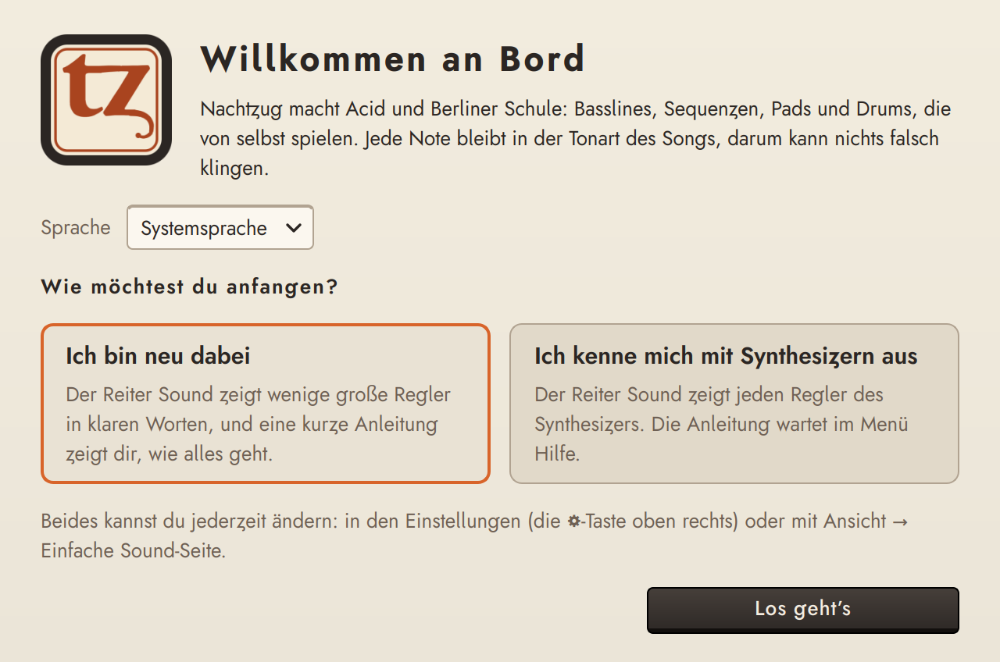
Worum es geht: den Demo-Song anhören, ihm eine neue Bassline und einen neuen Sound geben, eine Melodie hinzufügen, daraus einen ganzen Song machen und ihn speichern.
Dauer: etwa zehn Minuten.
Eine Änderung gefällt nicht? Die Taste ↶ neben der Anzeige nimmt sie zurück, so oft wie nötig. Soll es lieber ganz frisch losgehen, schreibt Datei → Neuer Song mit frischen Ideen (Strg+N) einen neuen Song mit Drums, Bass, Sequenz und Pad und einer zufälligen Akkordfolge. Es lohnt sich, das ein paar Mal auszuprobieren: Jeder Song ist anders!
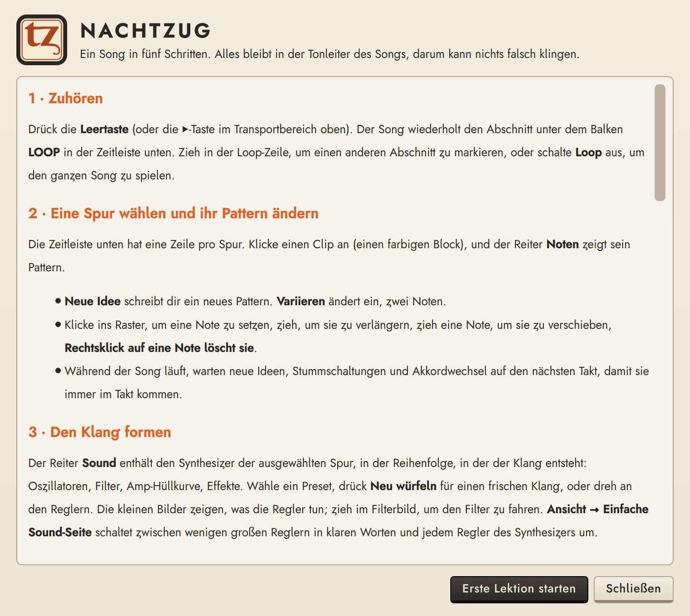
Unter Hilfe → Lektionen finden sich fünf kurze geführte Touren: Deine erste Acid-Line, Einen Beat bauen, Bewegung hineinbringen, Berliner Schule: die Akkorde spielen und Vom Loop zum Song. Ein weicher Schatten legt sich dabei über das Fenster, aus dem nur das, was als Nächstes dran ist, hell herausleuchtet, und eine Karte daneben erklärt, was zu tun ist. Gearbeitet wird übrigens die ganze Zeit im echten Programm (jeder Klick geht also durch), und die Lektion geht von selbst weiter, sobald der Schritt erledigt ist. Überspringen macht ohne ihn weiter, Lektion beenden hört auf. Auch die Anleitung (F1) hat einen Knopf Erste Lektion starten.
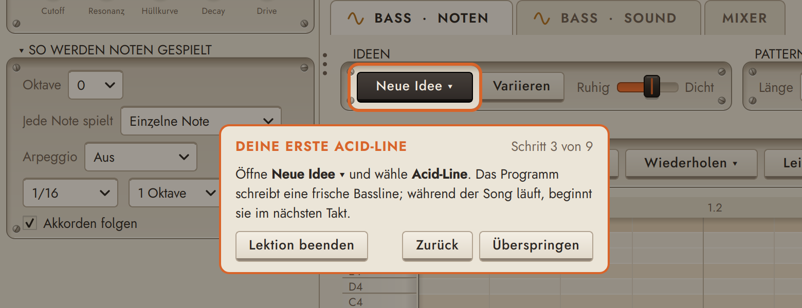
Die obere Leiste besteht aus drei Einheiten, die – wie die Module eines Rack-Geräts – in die Frontplatte geschraubt sind: Der Transport fährt den Song, Song bestimmt Tempo und Töne, und der Ausgang zeigt und regelt, was letztendlich aus den Lautsprechern kommt.
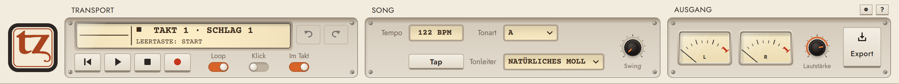
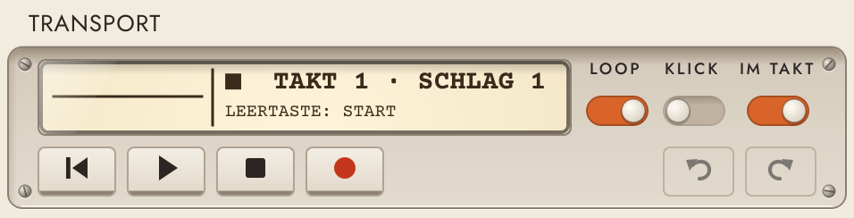
Die beleuchtete Anzeige zeigt oben, wo der Song gerade ist. Darunter steht, welche Spur die Buchstabentasten spielen, oder es erscheinen kurze Meldungen wie ÄNDERUNG KOMMT AM NÄCHSTEN TAKT. Die kleine Linie links ist übrigens der Klang selbst (eine Art winziges Oszilloskop).
| Bedienelement | Was es tut |
|---|---|
| Zurück zum Anfang des Loops, oder des Songs, wenn Loop aus ist. Pos1 | |
| Abspielen. Die Leertaste startet und stoppt. | |
| Stopp. | |
| Aufnahme. Solange sie leuchtet und der Song läuft, werden gespielte Noten und gedrehte Regler in den Song geschrieben. Strg+R | |
| Loop | Wiederholt den Abschnitt, der in der Loop-Zeile der Zeitleiste markiert ist. Ist Loop aus, spielt der ganze Song. Strg+L |
| Klick | Metronom: ein Klick auf jedem Schlag, ein höherer am Anfang jedes Takts. Strg+K |
| Im Takt | Zieht von Hand gespielte Noten auf den Schlag, während der Song läuft. |
| ↶ ↷ | Rückgängig und Wiederholen, neben der Anzeige. Ruht die Maus darauf, ist zu sehen, was sie zurücknehmen würden, etwa Rückgängig: Neue Idee. Strg+Z, Strg+Umschalt+Z |
Nach einer großen Änderung – etwa einer neuen Idee, einem gewürfelten Sound oder einer gelöschten Spur – erscheint unten im Fenster ein kleiner Hinweis mit der Taste Rückgängig. Er verschwindet nach kurzer Zeit von selbst und lässt sich, falls er eher stört, in den Einstellungen auch ganz abschalten.
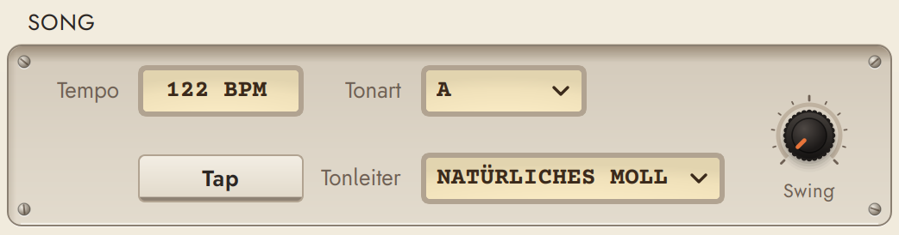
| Bedienelement | Was es tut |
|---|---|
| Tempo | Geschwindigkeit in Beats pro Minute (BPM), 40 bis 240. Zum Ändern wird das Feld angeklickt und der Wert eingetippt, oder das Mausrad wird darüber gedreht. |
| Tap | Wird mindestens viermal im Beat mitgetippt, folgt das Tempo. |
| Tonart, Tonleiter | Die Töne, die der ganze Song benutzt. Jedes Pattern wird ihnen angepasst; eine neue Tonart verschiebt deshalb den ganzen Song. Läuft der Song, kommt die Änderung am nächsten Takt. |
| Swing | Spielt jede zweite Sechzehntel etwas später, für ein rollendes Feeling. |
Acht Tonleitern sind eingebaut: Natürliches Moll, Dorisch, Phrygisch, Harmonisches Moll, Phrygisch-dominant, Moll-Pentatonik, Dur und Lydisch.
Für dunklen Acid und Berliner Schule empfiehlt es sich, mit Natürliches Moll, Dorisch oder Phrygisch anzufangen. Phrygisch-dominant klingt orientalisch, Lydisch hell und schwebend.
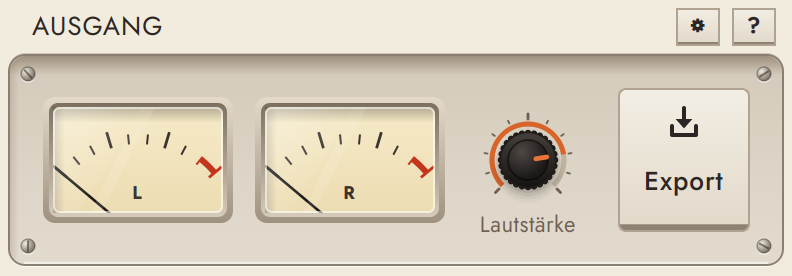
Zwei Zeiger-Pegelanzeigen zeigen den linken und den rechten Kanal. Erreicht eine Nadel die rote Marke, hält der Limiter (er sitzt ganz am Ende der Kette) den Klang zurück, damit er niemals knackt.
Lautstärke regelt alles, was zu hören ist. Export speichert den Song als Audiodatei (Strg+Umschalt+E, 9.2). Die Taste ⚙ öffnet die Einstellungen (9.3), die Taste ? die kurze Anleitung (F1).
Jede Spur ist ein Instrument – entweder ein Synthesizer oder die Drum-Maschine. Es gibt fünf Arten, und jede davon kommt mit einem passenden Klang und einem fertigen Pattern, sodass sofort etwas zu hören ist.
| Art | Typischer Einsatz |
|---|---|
| Bass | Acid-Kurven und tiefe Pulse. Spielt eine Note nach der anderen und kann zwischen Noten gleiten. |
| Sequenz | Der sich wiederholende Lauf im Herzen der Berliner Schule. |
| Pad | Lange Akkorde im Hintergrund. |
| Lead | Eine Melodie obendrauf. |
| Drums | Die Drum-Maschine, gespielt vom Auto-Drummer oder von Hand. |
Die Spalte links im Fenster zeigt immer die gerade ausgewählte Spur. Ihre Bereiche lassen sich – ganz einfach per Klick auf den jeweiligen Namen – zuklappen, sodass nur das offen bleibt, was gerade tatsächlich gebraucht wird (siehe Platz schaffen).
Ein Clip ist ein farbiger Block in der Zeitleiste. Er enthält ein Pattern, das sich so lange wiederholt, wie der Clip dauert, und trägt den Namen der Idee, die es geschrieben hat (z. B. Acid-Kurve). Wird ein Clip angeklickt, zeigt der Reiter Noten sein Pattern.
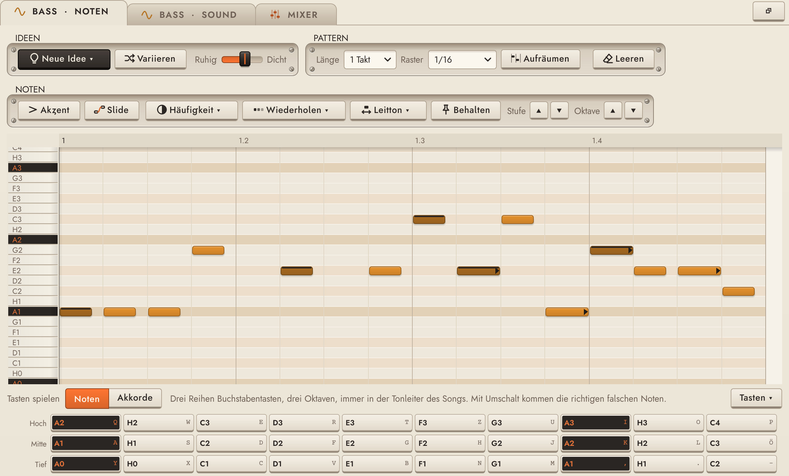
| Bedienelement | Was es tut |
|---|---|
| Neue Idee ▾ | Schreibt ein neues Pattern. Die Auswahl hängt von der Art der Spur ab (siehe unten). |
| Variieren | Ändert ein, zwei Noten. Ein weiterer Druck ändert mehr. |
| Ruhig – Dicht | Wie viele Noten neue Ideen haben. |
| Länge | Wie lang das Pattern ist, bevor es sich wiederholt: ein halber bis acht Takte. |
| Raster | Der Schritt, in dem Noten einrasten, von Vierteln bis zu Zweiunddreißigsteln, Triolen inklusive. |
| Aufräumen | Räumt Eingespieltes auf (siehe 3.4). |
| Leeren | Entfernt alle Noten des Patterns. |
| Spur | Ideen im Angebot |
|---|---|
| Bass | Acid-Kurve · Oktavsprung · Grundton-Puls · Berliner Sequenz |
| Sequenz | Berliner Sequenz · Arpeggio-Lauf · Acid-Kurve |
| Pad | Gehaltener Akkord · Akkord-Stabs |
| Lead | Melodie · Sparsame Melodie · Arpeggio-Lauf |
| Drums | Auto-Drummer · Four on the Floor · Acid House · Motorik · Broken Beat |
Läuft der Song, beginnt eine neue Idee oder Variation erst am nächsten Takt. So kommt sie immer im Takt.
Jede Zeile des Rasters ist ein Ton der Tonleiter des Songs. Die dunklen Zeilen sind der Grundton (z. B. jedes A in a-Moll), und ein Klick auf einen Notennamen links spielt ihn ab. Bei Spuren, die den Akkorden folgen, sind die Zeilen des aktuellen Akkords außerdem getönt – das sind die sichersten Töne, denn sie passen eigentlich immer. Ein leeres Pattern zeigt übrigens im Raster selbst, was zu tun ist.
| Vorhaben | So geht es |
|---|---|
| Note setzen | Auf eine freie Stelle klicken. Wird die Taste gehalten und nach rechts gezogen, wird die Note länger. |
| Note verschieben | Ziehen: auf und ab für die Tonhöhe, links und rechts für den Zeitpunkt. |
| Länge ändern | Die rechte Kante ziehen. |
| Note löschen | Rechtsklick darauf. Wird die rechte Taste gehalten und gewischt, werden mehrere gelöscht. |
| Einen Takt Arpeggio oder Akkord setzen | Rechtsklick auf eine freie Stelle; dann wird ein Arpeggio (aufwärts, abwärts oder auf und ab), eine rollende Sequenz oder ein Akkord gewählt. Ein Takt davon beginnt an dieser Note, aus der Tonleiter gebaut. Auf einer Drum-Zeile gibt es stattdessen einen Takt Schläge. |
| Mehrere auswählen | Umschalt halten und einen Rahmen ziehen. Strg+Klick nimmt eine hinzu oder heraus. |
| Zoomen | Strg + Mausrad. |
Worauf wirken Löschen und Kopieren? Notenraster und Zeitleiste reagieren beide auf Entf, Strg+C, Strg+V und Strg+D. Der zuletzt angeklickte Bereich trägt eine dünne farbige Linie an der Oberkante.
Die Knöpfe der Gruppe Noten wirken auf die ausgewählten Noten. Stufe und Oktave verschieben alle Noten, wenn keine ausgewählt ist.
Vier weitere Knöpfe wirken nur auf ausgewählte Noten. Auf einer Drum-Spur werden Schläge mit Umschalt + Ziehen oder Strg+Klick ausgewählt (ein einfacher Klick entfernt einen Schlag).
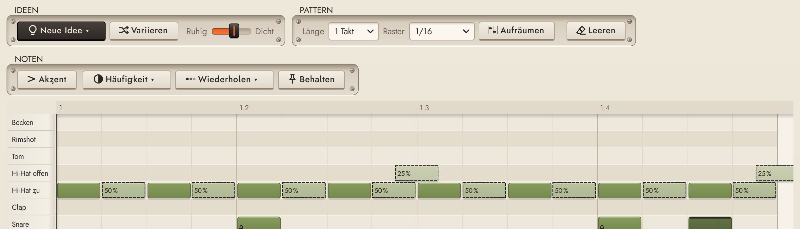
Die Computertastatur ist das Instrument! Drei Reihen Buchstabentasten spielen die ausgewählte Spur, und zwar drei Oktaven der Tonleiter des Songs. Da jede Taste ein Ton dieser Tonleiter ist, passt – ganz egal, welche gedrückt wird – jede Taste. In a-Moll spielen die Tasten:
Auf Deutsch heißt der Ton zwischen A und C auch in Nachtzug H. Die Oktavzahlen folgen der Einstellung Oktave; dunkle Tasten sind der Grundton. Auf einer Drum-Spur spielen Y bis , die acht Drumsounds. Die Tasten werden nach ihrer Lage erkannt, deshalb funktioniert jede Tastaturbelegung.
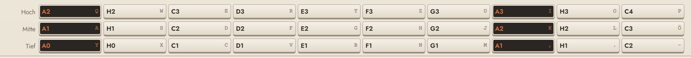
Unter So werden Noten gespielt im Inspektor lässt sich ändern, was eine einzelne Taste tut. Jede Note spielt eine einzelne Note, Oktaven, Quinten, einen Dreiklang, einen Septakkord, einen offenen Dreiklang oder geschichtete Quarten (alles aus der Tonleiter gebaut, versteht sich). Arpeggio spielt gehaltene Noten nacheinander – aufwärts, abwärts, auf und ab, zufällig oder in der gespielten Reihenfolge – in einem wählbaren Tempo und über eine bis drei Oktaven.
Mit Im Takt klingt eine etwas zu spät gespielte Note sofort, eine etwas zu früh gespielte wartet auf den Schlag.
Manchmal ist gerade der Ton der beste, der eigentlich nicht passt – vorausgesetzt, es ist die richtige falsche Note. Wird beim Spielen Umschalt gehalten, spielt jede Taste einen Ton einen Halbton außerhalb der Tonleiter, der zum eigentlichen Ton der Taste strebt (meist der Halbton direkt darunter, der nach oben zieht, andernfalls der darüber). Wird er kurz vor dem eigentlichen Ton gespielt, hört man ihn förmlich an seinen Platz fallen. Solange Umschalt gedrückt ist, zeigen die Bildschirmtasten, welche Töne man bekommt, und aufgenommene Noten behalten ihr ♭ oder ♯.
Im Akkordmodus spielt Umschalt den Akkord jeder Taste übrigens einen Halbton tiefer – einen Akkord, der in den eigentlichen hinaufgleitet. Ein solcher lässt sich auch in die Akkordzeile schreiben (7.2).
Unter dem Notenraster wird Tasten spielen von Noten auf Akkorde umgestellt (oder Strg+J gedrückt). Nun ist jede Buchstabentaste ein Akkord der Tonleiter, und jede Spur, die den Akkorden folgt, wechselt sofort dorthin und spielt dabei ihr Pattern einfach weiter. Genau so wird übrigens der Sequencer eines alten Synthesizers über seine Tastatur transponiert – und das ist der Kniff hinter erstaunlich viel Musik der Berliner Schule. Der Akkord bleibt, wenn die Taste losgelassen wird; Esc kehrt zu den Akkorden des Songs zurück. Ist die Aufnahme an, werden die gedrückten Akkorde Takt für Takt in die Akkordzeile der Zeitleiste geschrieben.
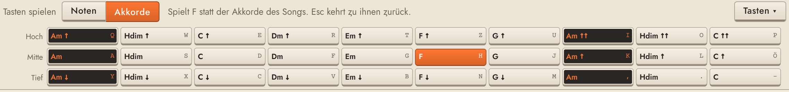
Auch ein MIDI-Keyboard spielt mit (9.6): Jede Taste spielt den nächstgelegenen Ton der Tonleiter, kräftig angeschlagene Noten bekommen einen Akzent, und im Akkordmodus wechseln seine Tasten den Akkord.
Ist das Eingespielte etwas wackelig geraten, hilft Aufräumen in der Gruppe Pattern. Dabei wird jede Note auf das daneben gewählte Raster (Raster) gerückt, doppelte Noten zu einer zusammengelegt und eine winzige, aus Versehen neben der eigentlichen gedrückte Note entfernt. Läuft das Pattern dreimal oder öfter durch und sind die Durchläufe größtenteils gleich, wird außerdem eine in einem Durchlauf verpasste Note ergänzt und eine falsche Taste korrigiert. Eine Änderung im letzten Durchlauf bleibt – abhängig davon, wie man spielt, ist sie meistens nämlich gewollt – ebenso unangetastet wie behaltene Noten. Was geändert wurde, steht in der Statuszeile, und Strg+Z holt das Gespielte zurück.
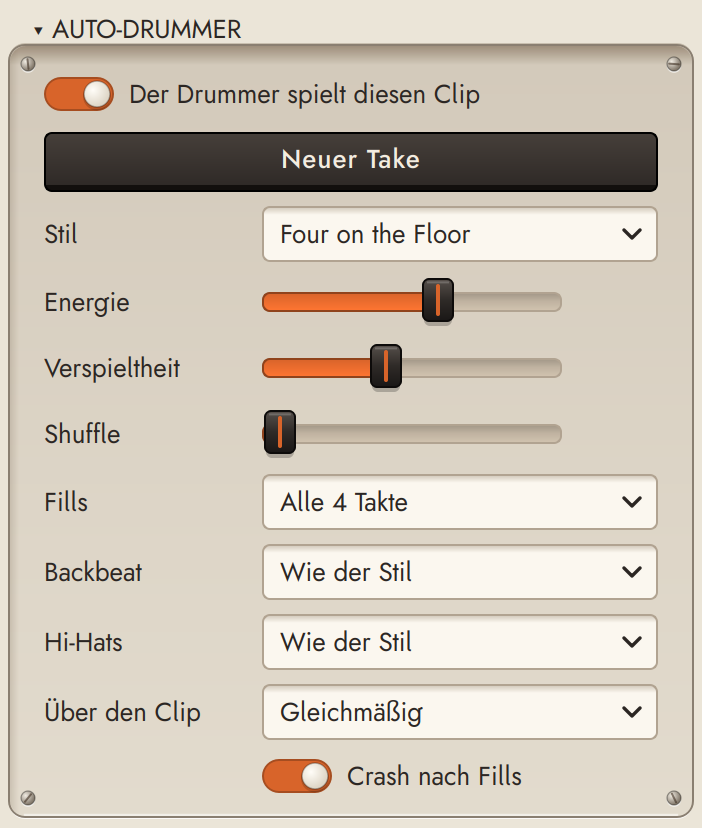
Drum-Clips beginnen mit eingeschaltetem Auto-Drummer. Er schreibt die Schläge aus einer Handvoll Einstellungen und schreibt sie neu, sobald eine davon geändert wird – der Groove lässt sich also lenken, während er spielt. Zu finden ist der Drummer im Inspektor links (allerdings nur, solange ein Drum-Clip ausgewählt ist).
Sieben Stile stehen bereit: Four on the Floor, Acid House, Motorik, Broken Beat, Halftime, Electro und Berliner Puls.
| Einstellung | Was sie tut |
|---|---|
| Der Drummer spielt diesen Clip | Ausgeschaltet werden die Schläge von Hand gesetzt. Was der Drummer geschrieben hat, bleibt als Ausgangspunkt erhalten. |
| Neuer Take | Gleiche Einstellungen, etwas anders gespielt. Der Knopf sitzt ganz oben, damit er immer erreichbar ist. |
| Stil | Die Art des Beats. |
| Energie | Wie kräftig der Drummer spielt. Dabei zählt jede Stellung: vom kargen Puls ganz unten über Ghost-Notes und zusätzliche Kicks bis zu dichten Hi-Hats, Crashs und langen Fills ganz oben. |
| Verspieltheit | Wie viele Ghost-Notes und kleine Überraschungen dazukommen. |
| Shuffle | Spielt jede zweite Sechzehntel etwas später. |
| Fills | Nie, oder alle 2, 4 oder 8 Takte. Am Ende des Clips kommt immer ein Fill. Je mehr Energie, desto länger und dichter die Fills. |
| Backbeat | Welcher Sound auf 2 und 4 spielt: wie der Stil, Clap, Snare, Rimshot oder keiner. |
| Hi-Hats | Wie der Stil, Achtel, Sechzehntel, nur Offbeats oder keine. |
| Über den Clip | Gleichmäßig, Aufbauen (von leise zu kräftig) oder Ausklingen. Gut geeignet für Anfang und Ende eines Songs. |
| Crash nach Fills | Ein Becken-Crash auf dem ersten Schlag nach jedem Fill. |
Ein Song lässt sich gut aus drei Drum-Clips bauen: einer auf Aufbauen am Anfang, ein gleichmäßiger in der Mitte mit Fills alle 8 Takte und einer auf Ausklingen am Ende.
Um Schläge von Hand zu setzen, muss zuerst der Drummer ausgeschaltet werden. Danach wird ins Raster geklickt, um einen Schlag zu setzen, und auf einen Schlag, um ihn zu entfernen. Die acht Drumsounds sind Kick, Snare, Clap, Hi-Hat zu, Hi-Hat offen, Tom, Rimshot und Becken.
Jede Synth-Spur hat ihren eigenen Synthesizer. Der Reiter Sound ordnet ihn so an, wie der Klang entsteht: Die Oszillatoren erzeugen einen rohen Ton, der Filter formt seine Farbe, die Amp-Hüllkurve seine Lautstärke, und die Effekte geben Raum und Biss. Kleine Fenster mit Millimeterpapier zeigen, was die Regler gerade tun.
Die Bereiche verteilen sich auf so viele Reihen, wie das Fenster eben braucht – auf einem schmalen Bildschirm wird der Reiter also einfach länger, und es wird nach unten gescrollt. Per Klick auf den Namen eines Bereichs wird er zugeklappt (Platz schaffen), woraufhin er nur noch eine einzeilige Zusammenfassung zeigt, z. B. Tiefpass 24 dB.
Ein Regler wird nach oben oder unten gezogen. Mit gehaltener Umschalt-Taste geht es in kleinen Schritten; ein Doppelklick setzt ihn zurück. Ruht die Maus darauf, werden sein Wert und seine Aufgabe angezeigt. Ein kleiner roter Punkt auf einem Regler bedeutet, dass eine Kurve ihn mit der Zeit bewegt (Kapitel 6).
Der Reiter Sound hat zwei Seiten. Umgeschaltet wird mit Ansicht → Einfache Sound-Seite oder auf der Seite Allgemein der Einstellungen; Nachtzug merkt sich die Wahl. Komplett zeigt jeden Regler, wie ab 5.3 beschrieben. Einfach zeigt stattdessen acht große Regler in klaren Worten. Jeder davon bewegt mehrere Regler der Seite Komplett zugleich – und zwar von dort aus, wo sie gerade stehen –, weshalb ein Preset seinen Charakter behält.
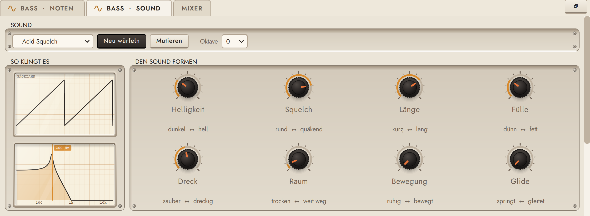
| Großer Regler | Was er bewegt |
|---|---|
| Helligkeit | Dunkel bis hell: den Cutoff des Filters. |
| Squelch | Der Acid-Sound: Resonanz, Hüllkurve und Akzent zusammen. |
| Länge | Kurze Plucks bis lange Töne: Decay von Amp und Filter, dazu Release. |
| Fülle | Dünn bis fett: Unisono-Kopien, Sub-Oszillator und Detune. |
| Dreck | Sauber bis dreckig: Drive. |
| Raum | Trocken bis weit weg: wie viel in den Hall und das Echo geht. |
| Bewegung | Ruhig bis bewegt: ein langsames Filter-Wabern vom LFO, dazu Chorus. |
| Glide | Springen bis Gleiten zwischen den Noten. |
Bei einer Drum-Spur hat die Seite Einfach einen Lautstärkeregler für jeden Drumsound, eine Taste zum Anhören, die zugehörige Sample-Taste (9.4) sowie Dreck, Echo und Raum für das ganze Kit.
| Gruppe | Presets |
|---|---|
| Bass | Acid Squelch · Rubber Square · Deep Bass · Zap Bass |
| Sequenz und Pluck | Berlin Sequence · Glass Pluck · Pulse Wanderer · Hollow Band |
| Pad | String Machine · Supersaw Pad · Phase Choir · Night Drone · Thin Air |
| Lead | Mellow Lead · Saw Lead · Wide Unison Lead |
| Glocken und Effekte | FM Bell · Sample and Hold |
Ein Klang gefällt? Klang speichern …, neben Neu würfeln, behält ihn unter einem Namen als eigenen Klang, außerhalb des Songs, sodass jeder Song ihn verwenden kann. Dazu gehören ein Name, eine Gruppe und auf Wunsch ein paar Suchwörter; mit Stern steht er oben in der Presetliste.
Die Presetliste zeigt unter Eigene Klänge die Klänge mit Stern und die zuletzt verwendeten. Alle übrigen liegen in der Klangbibliothek: Alle Klänge … unten in der Liste. Die Fächer links enthalten die eigenen Klänge, die mit Stern, jede Gruppe und die fertigen Klänge; die Suche findet einen Klang über seinen Namen oder seine Suchwörter. Das auf einer Karte spielt eine kurze Phrase mit diesem Klang, ohne etwas zu verändern, und Für diese Spur verwenden legt ihn auf die Spur. Die Pfeiltasten wählen eine Karte, Leertaste spielt sie an und Return verwendet sie.
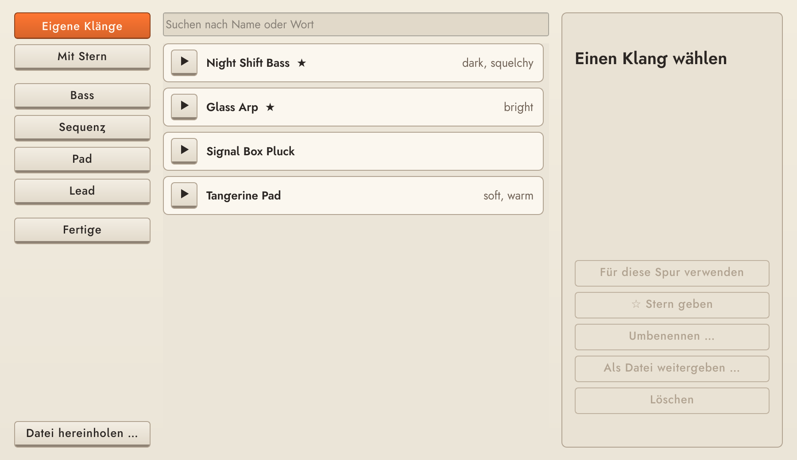
Jeder eigene Klang ist eine kleine Datei (.nzsound). Als Datei weitergeben … speichert eine Kopie an einem beliebigen Ort; ein Klang von jemand anderem kommt mit Datei hereinholen … herein oder indem man die Datei auf die Bibliothek zieht.
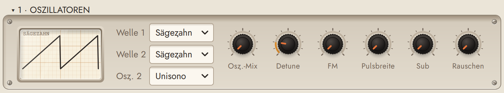
| Bedienelement | Was es tut |
|---|---|
| Welle 1, 2 | Sägezahn, Puls, Dreieck oder Sinus. Das Fenster zeigt die gemischte Welle. |
| Osz. 2 | Stimmt den zweiten Oszillator eine Oktave tiefer, gleich, eine Quinte höher oder eine Oktave höher. |
| Osz.-Mix | Mischt die beiden. |
| Detune | Verstimmt sie leicht, so dass sie langsam gegeneinander schweben. |
| FM | Lässt den zweiten den ersten verbiegen: Glocken und metallische Töne. |
| Pulsbreite | Macht die Pulswelle dünner. |
| Sub, Rauschen | Ein tiefer Ton eine Oktave darunter; Rauschen. |
| Stimmen | Unisono: stapelt bis zu sieben leicht verstimmte Kopien für einen riesigen Klang. Unisono-Detune bestimmt, wie weit sie auseinander liegen, Stereobreite verteilt sie nach links und rechts. |
| Spielweise | Poly spielt Akkorde (bis zu acht Noten); Mono eine Note nach der anderen, wie bei Acid-Basslines. |
| Glide | Lässt die Tonhöhe von einer Note zur nächsten gleiten. |
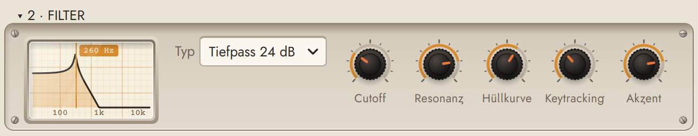
Der Filter nimmt einen Teil des Klangs weg. Ihn zu fahren ist die Geste im Herzen der Acid-Musik; es empfiehlt sich deshalb, mit diesem Abschnitt anzufangen.
| Bedienelement | Was es tut |
|---|---|
| Typ | Tiefpass 24 oder 12 dB (die klassische Fahrt von dunkel nach hell), Bandpass (dünn und näselnd), Hochpass (entfernt den Bass). |
| Cutoff | Wo er schneidet. |
| Resonanz | Erzeugt eine quietschende Spitze am Cutoff. |
| Hüllkurve | Wie weit jede Note den Filter öffnet. |
| Keytracking | Macht hohe Noten heller. |
| Akzent | Wie stark betonte Noten herausstechen. |
Das Acid-Rezept: Mono, Tiefpass 24 dB, Cutoff niedrig, Resonanz hoch, Hüllkurve etwa halb, kurzes Filter-Decay und ein Pattern mit Akzenten und Slides. Danach wird der Cutoff langsam gedreht, während es läuft.
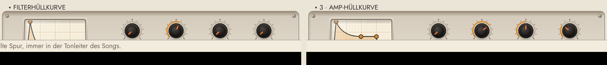
Eine Hüllkurve ist eine Form, der jede Note folgt. Die Filterhüllkurve öffnet und schließt den Filter bei jeder Note mit Attack, Decay und Sustain; → Tonhöhe verbiegt dabei auch die Tonhöhe (das ergibt Zaps und Laserklänge). Die Amp-Hüllkurve bestimmt, wie laut jede Note über die Zeit ist – kurzes Attack und Decay für Plucks, lange Werte für Pads. Release ist schließlich, wie lange eine Note nach ihrem Ende noch nachklingt.
Der LFO ist eine langsame, wiederkehrende Bewegung: Dreieck, Rechteck oder zufällige Stufen. Er kann auf den Filter (LFO → Filter), die Tonhöhe (Vibrato) oder die Pulsbreite (LFO → Pulsbreite) geschickt werden. Der Punkt in seinem Fenster wandert im Tempo des LFO.
Effekte: Drive (Verzerrung), Phaser mit seiner Rate, Chorus, und wie viel von der Spur in das gemeinsame Echo und den Hall geht.
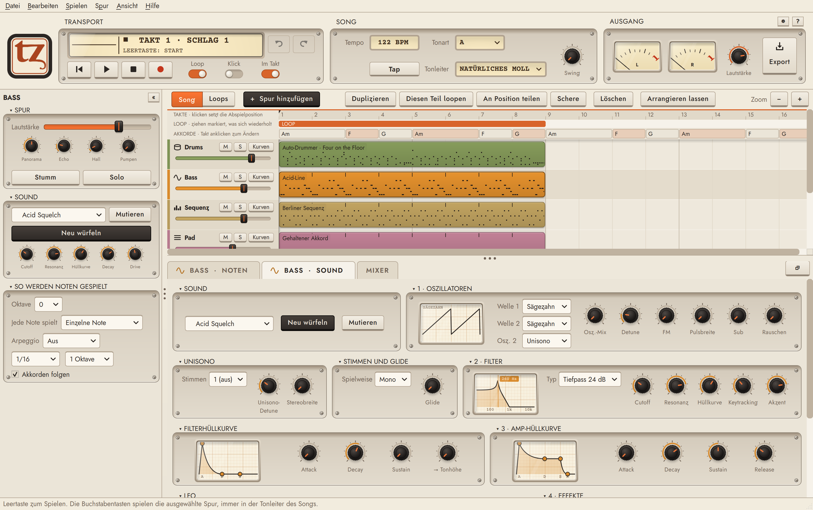
Bei einer Drum-Spur zeigt der Reiter Sound stattdessen das Drum-Kit: ein Kit-Preset (Maschinen-Kit, Weiches Boom-Kit oder Straffes Acid-Kit) sowie Pegel, Stimmung und Decay für jeden der acht Drumsounds, jeweils mit einer Taste zum Anhören. Der Inspektor hält das Kit samt Drive, Echo und Hall griffbereit.
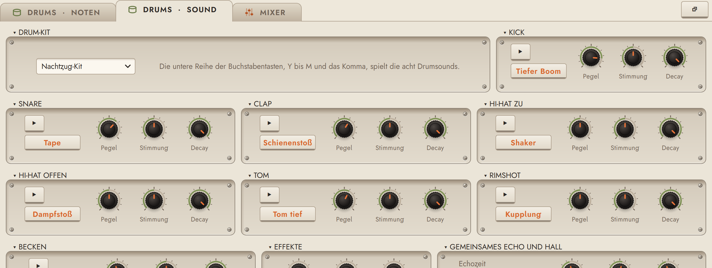
Jeder Drumsound kann stattdessen einen eigenen Sound spielen: Dazu wird darunter Eingebaut angeklickt und ein Sample gewählt, eine Audiodatei importiert oder eine aufgenommen (9.4). Mit Sample spielt Stimmung es schneller oder langsamer, bis zu einer Oktave in jede Richtung, und Decay kürzt es; ganz aufgedreht spielt das ganze Sample. Vier Kits bestehen aus Samples der Nachtzug-Bibliothek (9.4): Nachtzug-Kit, Tape-Kit, Electro-Kit und Handpercussion-Kit. Ein anderes Kit bringt seine eigenen Sounds mit; ein Drumsound, der ein eigenes Sample spielt, behält es.
Ein Filter, der sich langsam über sechzehn Takte öffnet, macht ein sich wiederholendes Pattern erstaunlich lebendig. Jeder Regler kann einer Kurve folgen, und eine solche Kurve ist – das ist das Schöne daran – schnell gezeichnet.
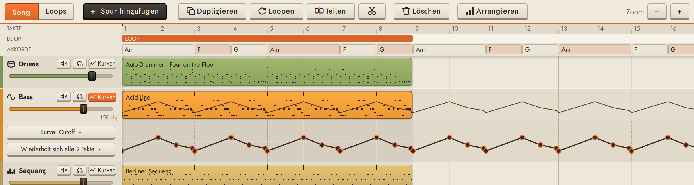
Zuallererst wird gedrückt, sodass sie leuchtet. Danach wird gedrückt und ein Regler gedreht. Die Bewegung wird als Kurve geschrieben.
Ein Regler an einem MIDI-Controller nimmt genauso auf, sobald er seinen Regler auf dem Bildschirm gelernt hat (9.6).
Wird ein Regler von Hand gestellt, pausiert seine Kurve, damit in Ruhe ausprobiert werden kann, ohne die Kurve zu verlieren. Kurven fortsetzen im Reiter Sound holt die Kurven zurück. Um eine Kurve zu löschen, wird der Regler mit rechts angeklickt und Kurve von … löschen gewählt.
Im Modus Song zeigt die Zeitleiste den ganzen Song. Die Zeit läuft in Takten von links nach rechts, mit einer Zeile pro Spur. Oben liegen drei Zeilen:
| Vorhaben | So geht es |
|---|---|
| Clip anlegen | Doppelklick auf eine freie Stelle in der Zeile einer Spur. |
| Auswählen | Klicken. Strg+Klick nimmt weitere dazu. |
| Noten bearbeiten | Doppelklick darauf. |
| Verschieben | Ziehen, auch auf eine andere Spur derselben Art. |
| Verlängern | Die rechte Kante ziehen. Striche oben zeigen, wo sich das Pattern wiederholt. |
| Teilen | Die Schere (✂) einschalten, dann an die gewünschte Stelle klicken; oder Teilen (Strg+E). |
| Kopieren | Duplizieren (Strg+D) setzt eine Kopie direkt dahinter. Strg+C / V fügt an der Abspielposition ein. |
| Löschen | Löschen oder die Taste Entf. |
| Ein- oder ausblenden | Rechtsklick → Übergang am Anfang oder am Ende: Blende, Filterfahrt oder beides, einen Schlag bis vier Takte lang. Ein dunkler Keil zeigt den Übergang an. |
Beim Verschieben rasten Clips auf ganze Schläge ein; mit gehaltener Umschalt-Taste in Sechzehnteln. Strg + Mausrad oder − + zoomen. Und nicht vergessen: ↶ oder Strg+Z macht alles rückgängig.
Jeder Takt hat einen Akkord. Spuren mit Akkorden folgen (zu Beginn sind das Bass, Sequenz und Pad) verschieben ihre Noten mit, sodass ein einziges eintaktiges Pattern über eine ganze Akkordfolge spielen kann.
Ist die Zeitleiste weit herausgezoomt, wird jede Strecke mit demselben Akkord als ein Block in der Akkordzeile gezeigt; die Blöcke wechseln sich farblich ab, sodass die Wechsel immer gut zu sehen sind. Ruht die Maus auf einem Takt, wird dessen Akkord angezeigt.
Ob eine Spur den Akkorden folgt, wird mit Akkorden folgen unter So werden Noten gespielt im Inspektor eingestellt, oder per Rechtsklick auf ihren Namen. Lead und Drums folgen von Haus aus nicht.
Aus einem Loop, der gut klingt, einen ganzen Song zu machen, ist oft der schwierigste Teil. Arrangieren lassen – mit Arrangieren über der Zeitleiste oder im Menü Bearbeiten – nimmt genau das ab: Dabei wird von jeder Spur das Pattern am Loop genommen und daraus der Song in Teilen gebaut.
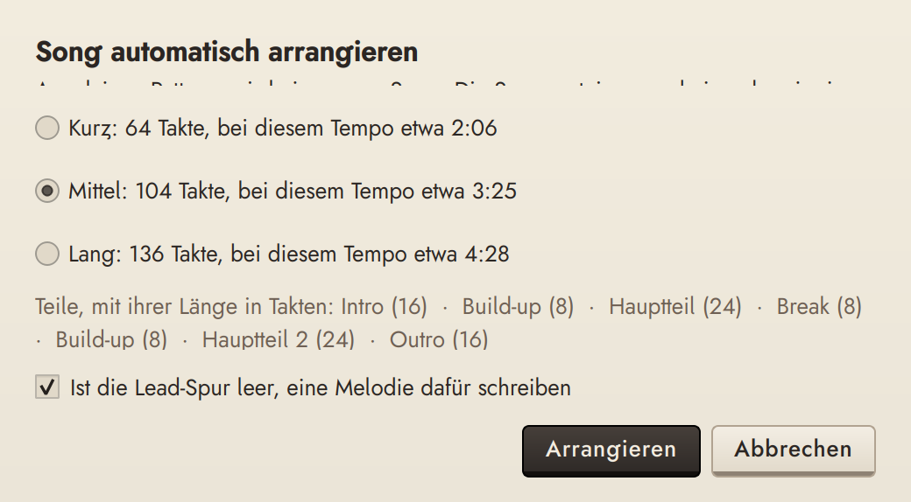
| Teil | Was spielt |
|---|---|
| Intro | Ein leiser Drummer, das Pad blendet sich ein, die Sequenz blendet sich ein, während ihr Filter aufgeht. |
| Build-up | Der Bass steigt ein, sein Filter öffnet sich; der Drummer baut auf. |
| Hauptteil | Alles. |
| Break | Keine Drums und kein Bass: Pad, Sequenz und der Lead. |
| Hauptteil 2 | Wieder alles, mit dem Lead, einem lebhafteren Drummer und leicht variierten Patterns. |
| Outro | Der Drummer klingt aus; die Spuren blenden sich aus, ihre Filter schließen sich. |
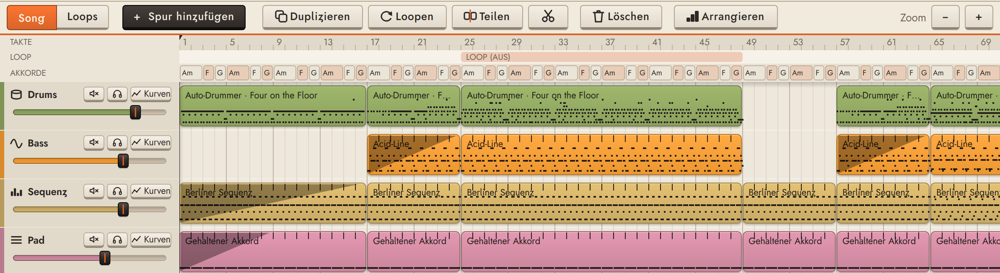
Ist die Lead-Spur noch leer, bekommt sie eine eigene Melodie. Was vorher in der Zeitleiste lag, wird ersetzt (↶ holt es aber jederzeit zurück). Danach besteht alles aus ganz gewöhnlichen Clips, die verschoben, verlängert und geändert werden können – und mit dem Loop lässt sich an einem Teil nach dem anderen arbeiten.
Wird Loops neben Song gedrückt, wird aus der Zeitleiste ein Raster. Es ist – wie der Name schon vermuten lässt – zum Ausprobieren und zum Live-Spielen gedacht: Jede Spur hat eine Reihe Zellen, und jede Zelle enthält ein Pattern.
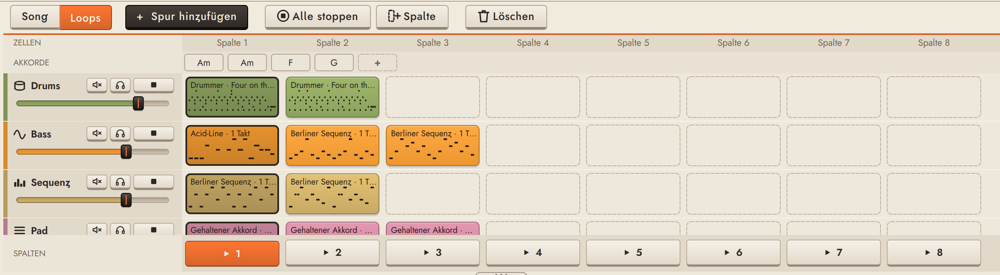
Wird gedrückt, sodass sie leuchtet, während Zellen gestartet und gestoppt werden, wird alles Gestartete als Clips in die Song-Zeitleiste geschrieben, vom Takt, an dem es begann, bis zum Takt, an dem es endete. Danach wird zurück auf Song geschaltet, um das Ergebnis zu sehen und (wie jeden anderen Teil der Zeitleiste auch) zu bearbeiten. Eine gute Jam ist schon der halbe Song!
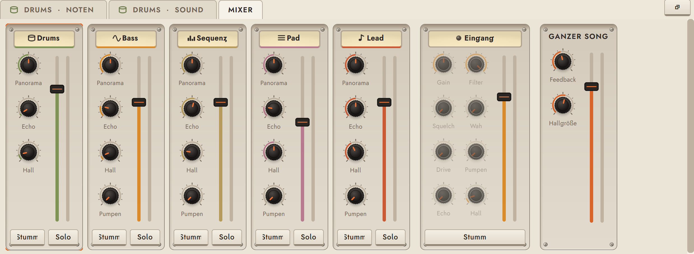
Der Reiter Mixer zeigt einen Kanalzug pro Spur, jeder in seine eigene Mulde geschraubt: Regler für Panorama, Echo und Hall, einen Lautstärke-Fader mit dem Pegel der Spur daneben, dazu Stumm und Solo. Doppelklick auf einen Fader setzt ihn zurück. Der Zug Ganzer Song trägt Gesamtlautstärke, Feedback und Hallgröße.
Pumpen, bei jeder Spur außer den Drums, duckt die Spur bei jeder Kick weg und lässt sie in etwa einem Drittel Schlag wieder anschwellen: der atmende Klang so vieler Tanzmusik. Es lohnt sich, das bei einem Pad oder einer Bassline auszuprobieren; der Unterschied ist sofort zu hören. Die Kick treibt das Pumpen auch dann an, wenn die Drum-Spur stumm ist.
Der Kanalzug Eingang spielt den Eingang des Audiogeräts live durch Nachtzug: eine Gitarre, eine Stimme, einen anderen Synthesizer. Mit Eingang wird er geöffnet (das Gerät wird in den Einstellungen auf der Seite Audio gewählt). Gain stellt ein, wie laut er hereinkommt, Filter und Squelch arbeiten wie das Filter des Synthesizers, Wah öffnet das Filter, je lauter gespielt wird, wie ein Wah-Pedal, und Drive, Pumpen, Echo und Hall tun, was sie bei den Spuren tun. Der Eingang ist nie Teil eines Exports.
Mit einem Mikrofon müssen Kopfhörer benutzt werden! Über Lautsprecher würde der Klang andernfalls ins Mikrofon zurückkoppeln und pfeifen.
Ein Limiter schützt den Ausgang: Wird die Mischung zu laut, knackt nichts, aber der Klang wird zusammengedrückt. Stehen die Anzeigen oft im Roten, sollten Spuren leiser statt lauter gemacht werden.
| Menüeintrag | Was er tut |
|---|---|
| Neuer Song mit frischen Ideen Strg+N | Drums, Bass, Sequenz und Pad, dazu eine zufällige Akkordfolge. |
| Neuer leerer Song | Ein Song ohne Spuren. |
| Öffnen… Strg+O | Öffnet einen .nachtzug-Song. |
| Speichern Strg+S | Speichert den Song. Speichern unter… mit zusätzlich Umschalt. |
| Export: Audiodatei, Spuren oder MIDI… Strg+Umschalt+E | Dasselbe wie die Taste Export (unten). |
| Einstellungen… Strg+, | Sprache, Farben, Größe, Audio, Samples und MIDI (9.3). |
Gibt es ungespeicherte Änderungen, fragt Nachtzug vor dem Schließen oder Öffnen eines anderen Songs nach; der Fenstertitel zeigt dann ein *.
Solange es ungespeicherte Änderungen gibt, legt Nachtzug alle halbe Minute still und leise eine Ersatzkopie an. Schließt es sich einmal, ohne zu fragen – etwa nach einem Absturz oder weil der Computer ausging –, bietet der nächste Start an, den Song wiederherzustellen, und zwar samt der Änderungen, die nicht gespeichert waren. Wird Nachtzug ganz normal beendet, wird die Kopie wieder weggeworfen.
Zuallererst wird oben rechts Export gedrückt. Unter Erstellen wird dann gewählt, was herauskommen soll:
01 Drums.wav, 02 Bass.wav …) in einem neuen Ordner. Alle beginnen im selben Moment und ergeben zusammen genau den Song, samt Echo und Hall, zum Mischen in einem anderen Musikprogramm.Stummgeschaltete Spuren bleiben bei allen dreien draußen.
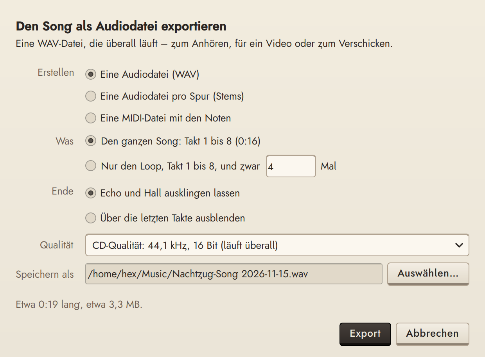
| Einstellung | Auswahl |
|---|---|
| Was | Der ganze Song von Takt 1 bis zum Ende des letzten Clips, egal wo der Loop liegt; oder Der Loop allein, 1- bis 32-mal hintereinander, für einen nahtlosen Loop oder einen Übungstrack. |
| Ende | Ausklingen lassen: Echo und Hall klingen aus, und die Datei endet, sobald sie verklungen sind; oder Ausblenden über die letzten Takte. |
| Qualität | CD-Qualität, 44,1 kHz 16 Bit, läuft überall. 48 kHz 16 Bit passt zu Video; 24 Bit mit 48 oder 96 kHz ist für die Weiterarbeit in einem Studioprogramm. |
| Speichern als | Der Dateiname, zu Beginn im Musik-Ordner; Auswählen… wählt einen anderen Ort. Nachtzug fragt, bevor es eine Datei ersetzt. |
Ist die Datei geschrieben, zeigt Dein Song ist fertig ihre Länge und Größe, mit Abspielen und Im Ordner zeigen. Aus dem Terminal: nachtzug --render out.wav song.nachtzug.
Die Taste ⚙ im Ausgang oder Datei → Einstellungen… (Strg+,) öffnet die Einstellungen. Jede Änderung gilt sofort.
| Seite | Was sich einstellen lässt |
|---|---|
| Allgemein | Sprache (ab dem nächsten Start), Farben, Größe, ob der Reiter Sound Einfach oder Komplett öffnet, Tasten (Symbol und Wort oder nur Symbole), Fenster (die Zeitleiste über oder neben den Noten), die Bildschirmtasten, den Rückgängig-Hinweis, die Scrollbalken und die Begrüßung. |
| Audio | Audiosystem (Automatisch nimmt das beste; unter Linux auch PipeWire, PulseAudio, ALSA oder JACK), Ausgabe über (welche Lautsprecher oder Kopfhörer), Samplerate und Puffergröße. Eine Zeile darunter sagt, was gerade läuft. Testton abspielen prüft, ob Ton herauskommt. Aufnehmen von wählt den Eingang, für Sample-Aufnahmen und für den Eingangs-Kanal des Mixers. |
| Samples | Die Sample-Bibliothek (9.4). |
| MIDI | Keyboards, Controller und Clock (9.6). |
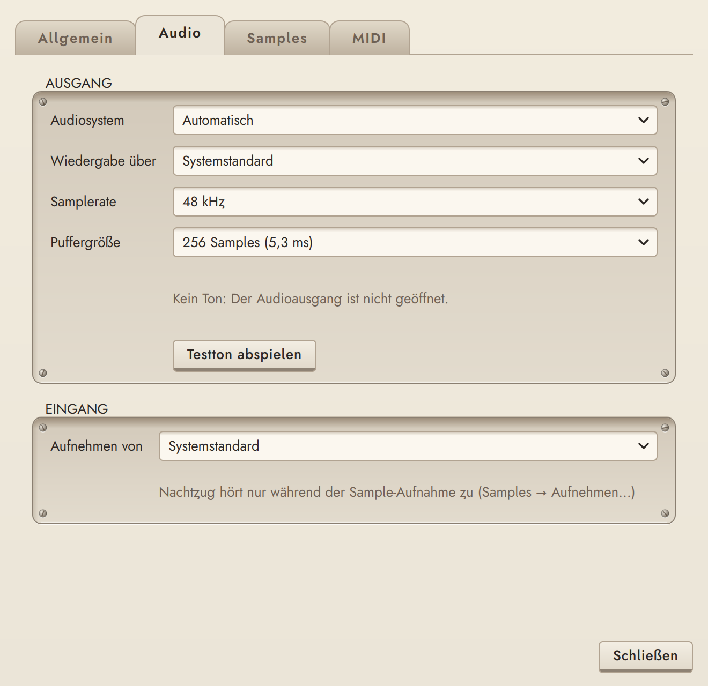
Eine kleinere Puffergröße lässt die Buchstabentasten schneller reagieren; knackt der Ton, sollte eine größere gewählt werden. 256 Samples sind eine gute Mitte. Fehlt eine gewählte Soundkarte beim nächsten Start (etwa abgezogene Kopfhörer), nimmt Nachtzug die Standardausgabe und sagt es.
Größe zeichnet das ganze Fenster größer oder kleiner, von 80 bis 200 %. Auf Automatisch (die Voreinstellung) wählt Nachtzug eine Größe, die bequem auf den Bildschirm passt – auf einem Laptop sind das meist 90 %, damit nichts gedrängt wirkt. Eine neue Größe gilt ab dem nächsten Start; Jetzt neu starten startet sofort neu und fragt vorher nach ungespeicherten Änderungen. Größen, die zu groß für den Bildschirm sind, werden gezeigt, lassen sich aber nicht wählen.
Jeder der acht Drumsounds kann statt seines eigenen Sounds ein Sample spielen. Nachtzug bringt dafür eine Bibliothek mit 65 eigens gemachten Sounds mit, die allesamt – ganz ohne Aufnahmen – aus Oszillatoren, Rauschen und Filtern synthetisiert sind: Kicks, Snares, Claps, Hi-Hats, Becken und Percussion, neun Klänge eines Nachtzugs (Schienenstöße, Türgong, Bremsen, ein fernes Horn), Töne, Effekte und vier lange Texturen wie Regen am Fenster. Die ganze Liste steht in A.4.
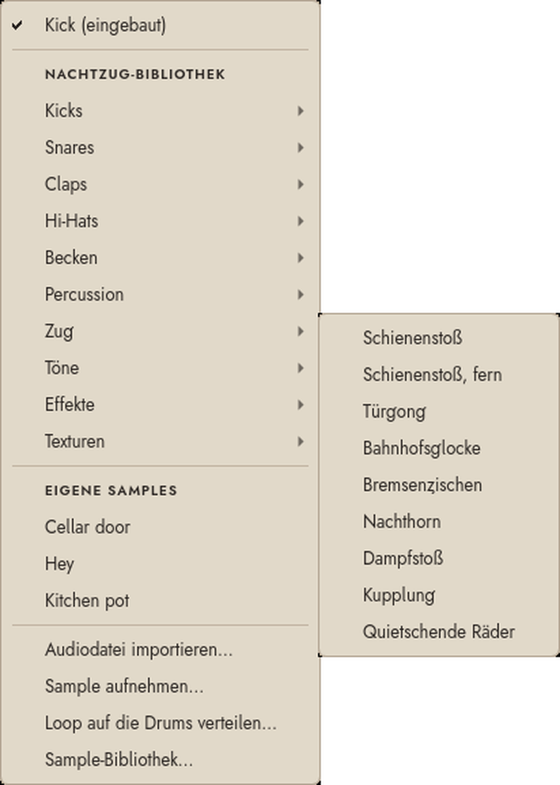
Zuallererst wird die Taste unter einem Drumsound angeklickt (bis etwas gewählt ist, steht dort Eingebaut) und eine Kategorie geöffnet. Ruht die Maus auf einem Sound, ist er zu hören; ein Klick wählt ihn aus. Der Drumsound spielt ihn dann in seiner eigenen Tonhöhe und ganz. Am schnellsten geht es mit einem Sample-Kit (5.7). Besonders zu empfehlen ist das Nachtzug-Kit: Es spielt den tiefen Kick, eine Tape-Snare, den Schienenstoß als Clap, einen Shaker als geschlossene Hi-Hat, einen Dampfstoß als offene Hi-Hat, eine tiefe Tom, die Kupplung als Rimshot und den Türgong als Becken.
Die Texturen dauern mehrere Sekunden. Wird eine davon auf einen Drumsound gelegt, der von Hand gespielt wird (z. B. die Tom), mit einem Schlag alle vier oder acht Takte und zurückgenommenem Pegel, liegen Regen oder ferne Schienen unter dem Intro.
Die Seite Samples der Einstellungen zeigt die Bibliothek und die eigenen Samples.
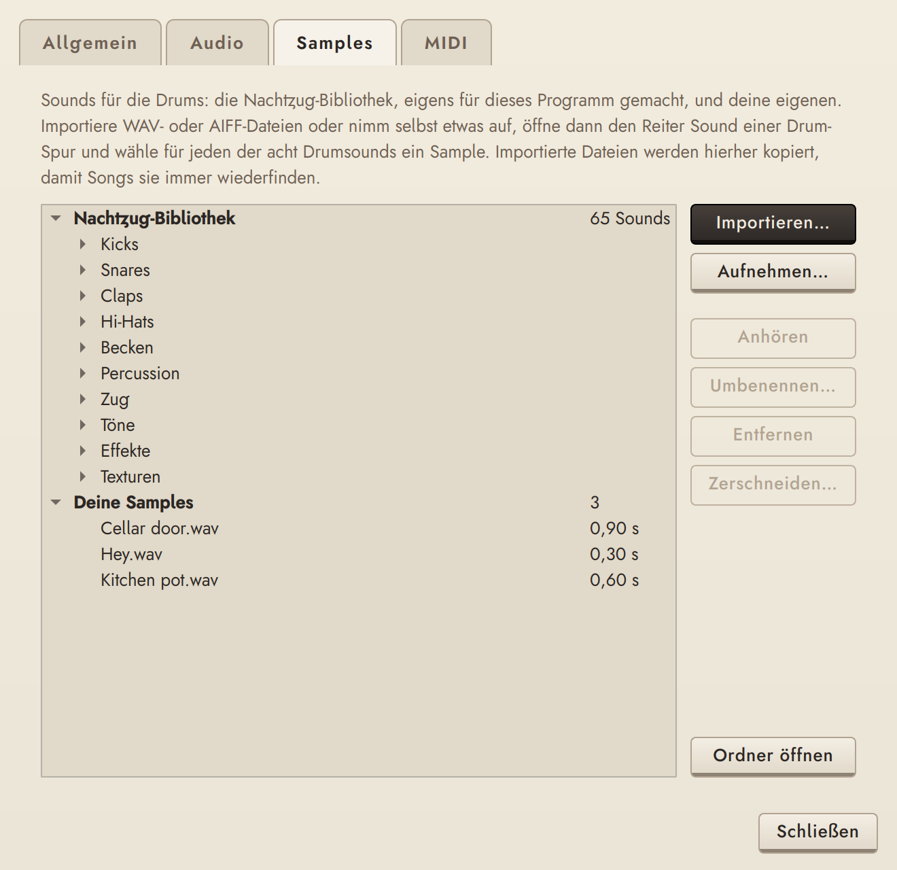
Um ein Sample zu benutzen, wird der Reiter Sound einer Drum-Spur geöffnet und unter einem Drumsound Eingebaut angeklickt (5.7). Dasselbe Menü kann auch gleich importieren oder aufnehmen. Ein Song merkt sich die Namen seiner Samples; fehlt eins beim Öffnen, spielt dieser Drumsound den eingebauten Sound, und Nachtzug sagt, welches Sample fehlt.
Ein Drum-Loop von anderswo lässt sich in Stücke schneiden, eines auf jedes Drum-Pad. Dazu wird Spur → Loop auf die Drums verteilen… gewählt (oder Zerschneiden… auf der Seite Samples oder der Eintrag im Sample-Menü unter einem Drumsound) und der Loop ausgesucht.
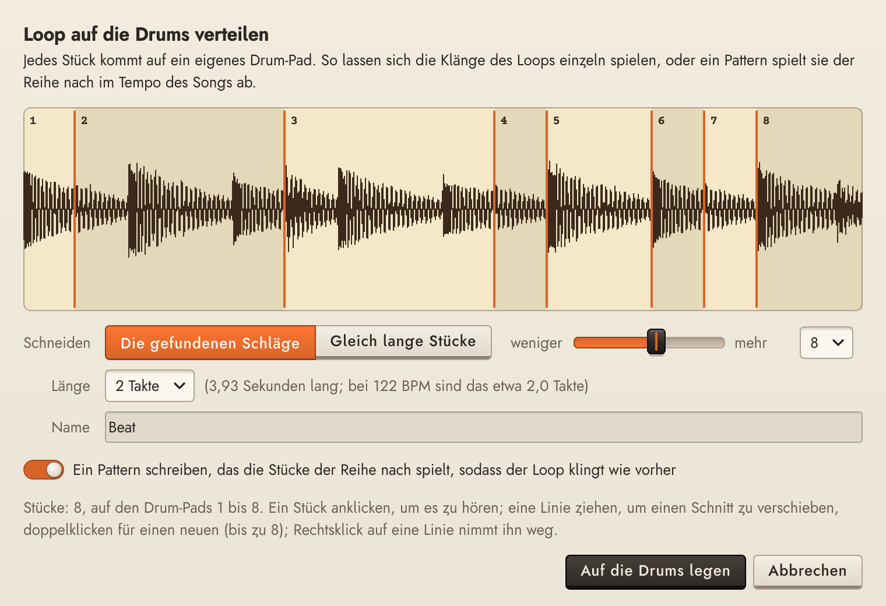
Die Stücke werden unter dem angegebenen Namen durchnummeriert in der Sample-Bibliothek gespeichert, damit der Song sie wiederfindet. Die ausgewählte Drum-Spur bekommt sie; ist keine ausgewählt, die erste, oder es wird eine neue angelegt. Ein ↶ nimmt alles zurück.
Ansicht → Farben oder die Seite Allgemein der Einstellungen bietet sechs Farbschemata und merkt sich die Wahl.
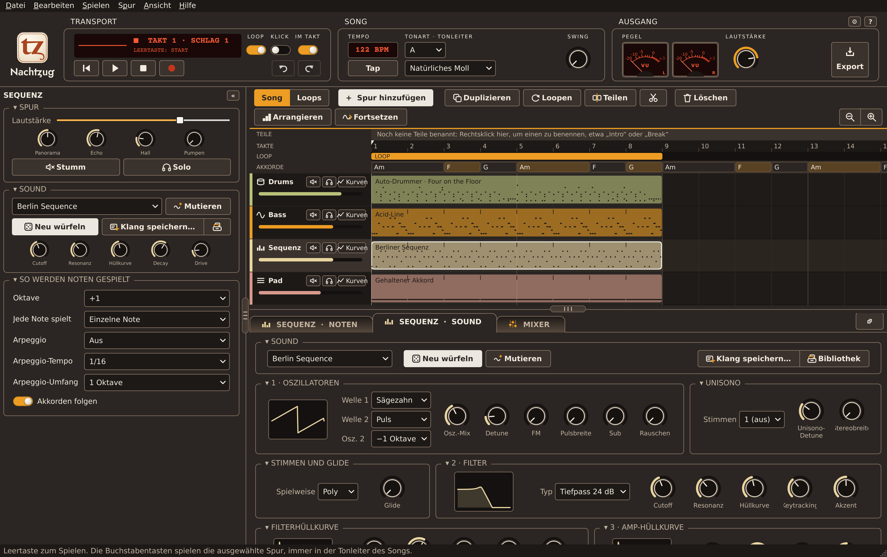
Nachtzug hört auf jedes eingesteckte MIDI-Gerät, außer es wird auf der Seite MIDI der Einstellungen eines ausgewählt; eine Zeile dort zeigt, was zuletzt ankam.
Unter Linux muss der Benutzer für MIDI in der Gruppe audio sein. Ist er es nicht, weist die Seite MIDI darauf hin. In diesem Falle muss in einem Terminal sudo usermod -aG audio $USER eingegeben werden; danach ist eine Ab- und Wiederanmeldung nötig.
Drei klassische Klänge, Regler für Regler. Das genannte Preset dient als Ausgangspunkt (wer lernen möchte, was jeder Regler tut, stellt sie nach einem Neu würfeln einfach selbst ein). Die Regler sind gezeichnet, wie sie stehen; was nicht gezeigt ist, bleibt, wie es ist.
Ein Lieblingsklang gefunden? Er kann auf einem der Patch-Bögen hinten in diesem Heft notiert werden, so wie es Synthesizer-Spieler schon immer gemacht haben!
| Taste | Aktion |
|---|---|
| Leertaste | Abspielen oder stoppen |
| Pos1 | Zurück zum Anfang |
| Buchstabentasten | Die ausgewählte Spur spielen (3.4) |
| Strg+R | Aufnahme an oder aus |
| Strg+L | Loop an oder aus |
| Strg+K | Metronom an oder aus |
| Strg+J | Akkordmodus an oder aus (3.4) |
| Esc | Zurück zu den Akkorden des Songs; nicht mehr auf einen MIDI-Regler warten |
| Strg+Z / Strg+Umschalt+Z | Rückgängig / wiederholen (auch die Tasten ↶ ↷) |
| Strg+C X V | Kopieren, ausschneiden, einfügen |
| Strg+D | Duplizieren |
| Strg+A | Alles auswählen |
| Entf | Ausgewähltes löschen |
| Strg+E | Ausgewählten Clip an der Abspielposition teilen |
| Strg+N O S | Neuer Song, öffnen, speichern |
| Strg+Umschalt+E | Song exportieren |
| Strg+, | Einstellungen |
| Strg+I | Inspektor zeigen oder wegklappen (Platz schaffen) |
| F1 | Die Anleitung im Programm |
| Strg + Mausrad | Notenraster oder Zeitleiste zoomen |
| Umschalt + Ziehen | Feine Schritte für Regler, Fader, Noten, Clips und Kurvenpunkte |
Ließ sich die Tonausgabe nicht öffnen, weist Nachtzug beim Start darauf hin. Zuallererst sollten die Einstellungen (⚙) geöffnet, die Seite Audio gewählt und Testton abspielen gedrückt werden; danach lohnt sich ein Versuch mit einer anderen Ausgabe über oder einem anderen Audiosystem. Außerdem sollte geprüft werden, dass kein anderes Programm das Audiogerät allein belegt, dass keine Spuren stumm geschaltet sind und dass die Lautstärke aufgedreht ist. Bluetooth-Kopfhörer hängen mitunter fest; meist hilft es, sie neu zu verbinden.
Auf der Seite Audio der Einstellungen sollte eine größere Puffergröße gewählt werden; außerdem sollten andere Programme, die viel Rechenzeit brauchen, geschlossen werden.
Das Sample ist nicht mehr in der Bibliothek (entfernt oder umbenannt). In diesem Falle muss es neu importiert und unter diesem Drumsound gewählt werden.
Vermutlich hat ein Textfeld die Tastatur: Nachdem ein Tempo eingetippt wurde, muss Esc gedrückt oder woanders hingeklickt werden. Außerdem lohnt sich ein Blick auf die Anzeige: Sie zeigt, welche Spur die Tasten spielen.
Der Auto-Drummer schreibt diesen Clip. Zuerst muss im Inspektor Der Drummer spielt diesen Clip ausgeschaltet werden.
Läuft der Song, warten neue Ideen, Stummschaltungen, Akkordwechsel und Starts im Loop-Raster auf den nächsten Taktstrich, damit sie – wie es sich gehört – im Takt kommen. Die Anzeige weist darauf hin, solange etwas wartet.
Er folgt einer Kurve. Wird er von Hand gedreht, pausiert die Kurve; Kurven fortsetzen holt sie zurück, und per Rechtsklick auf den Regler lässt sie sich löschen.
Auf der Seite Allgemein der Einstellungen wird Größe auf Automatisch oder eine kleinere Größe gestellt und Jetzt neu starten gedrückt. Platz schaffen außerdem zugeklappte Bereiche, ein weggeklappter Inspektor oder ein eigenes Fenster für die Reiter (Platz schaffen).
Zuallererst sollte die Seite MIDI der Einstellungen geöffnet werden: Sie zeigt, ob Nachtzug MIDI überhaupt benutzen darf (unter Linux siehe den Tipp in 9.6), und was zuletzt ankam. Nach dem Einstecken eines Geräts muss Erneut nach Geräten suchen gedrückt werden.
Kein Grund zur Sorge! Beim nächsten Start bietet Nachtzug an, den Song wiederherzustellen, samt der Änderungen, die nicht gespeichert waren (9.2).
Der schmale Reiter » am linken Fensterrand holt ihn zurück, ebenso Strg+I oder Ansicht → Inspektor.
Mehrere laute Spuren addieren sich. Abhilfe schafft es, im Mixer Spuren leiser zu machen oder den Drive der lautesten zu senken.
| Spuren | Bis zu 12; Bass, Sequenz, Pad, Lead oder Drums |
| Synth-Stimmen | 8 pro Spur, mono oder poly, mit Glide |
| Oszillatoren | 2 pro Stimme (Sägezahn, Puls, Dreieck, Sinus), Sub, Rauschen, FM, Unisono bis 7 Kopien |
| Filter | Resonanter Ladder-Filter; Tiefpass 24 / 12 dB, Bandpass, Hochpass; Keytracking, Akzent |
| Hüllkurven | Filter-ADS mit Tonhöhen-Anteil; Amp-ADSR |
| LFO | Dreieck, Rechteck, Zufall; auf Filter, Tonhöhe, Pulsbreite |
| Effekte | Pro Spur: Drive, Phaser, Chorus. Gemeinsam: Tempo-Echo, Hall. Ausgangs-Limiter |
| Drums | 8 synthetische Drumsounds, jeder kann stattdessen ein Sample spielen; 3 synthetische und 4 Sample-Kits; Auto-Drummer mit 7 Stilen; Loops auf die Pads verteilt |
| Noten | Akzent, Slide, Häufigkeit (100, 75, 50, 25 %), 1 bis 4 schnelle Wiederholungen, Behalten |
| Mixer | Pro Spur: Lautstärke, Panorama, Echo, Hall, Pumpen (Ducking von der Kick), Stumm, Solo. Ein Live-Eingang mit Filter, Wah, Drive, Pumpen und Sends |
| Presets | 18 Synth-Klänge, dazu ein Zufallsklang-Generator |
| Tonleitern | 8; jede Tonart |
| Patterns | ½ bis 8 Takte; Raster ¼ bis 1/32 mit Triolen |
| Takt | 4/4, 40 bis 240 BPM, Swing |
| Export | WAV stereo, 44,1, 48 oder 96 kHz, 16 Bit (mit Dither) oder 24 Bit; ganzer Song oder Loop, ausklingen oder ausblenden; eine Datei pro Spur (Stems); Standard-MIDI-Datei |
| MIDI | Keyboards (in der Tonleiter, Akzent aus der Anschlagstärke, GM-Drumnoten), gelernte Controller-Regler, Clock rein und raus mit Start, Stopp und Songposition |
| Samples | Eine Bibliothek mit 65 eigens gemachten Sounds; eigene WAV- und AIFF-Dateien, 8 bis 32 Bit, mono oder stereo, bis 60 s; Aufnahme von jedem Eingang |
| Song-Datei | .nachtzug (einfaches JSON) |
| Sprachen | Deutsch, Englisch |
| System | Linux, macOS und Windows; Qt 6 und SDL2 (PipeWire, PulseAudio, ALSA, JACK; Core Audio; WASAPI); MIDI über ALSA, Core MIDI oder Windows-MIDI |
| Noch nicht | Audiospuren, Import von MP3 und FLAC |
Jeder Sound ist mit tools/samplegen synthetisiert, dem programmeigenen Sample-Macher. Die tonalen sagen, welchen Ton sie spielen; Stimmung verschiebt sie um bis zu eine Oktave.
| Art | Sounds |
|---|---|
| Kicks | Tiefer Boom: Lang und rund, mit tiefem Ausklang; Punch: Kurz und fest, setzt sich in einer dichten Mischung durch; Analoger Wumms: Trocken und hölzern, wie eine alte Drum-Maschine; Grollen: Hart, mit dunkel grollendem Ausklang, für Techno; Hart: Verzerrt und knapp, für Acid; Weicher Filz: Gedämpft und sanft, für leise Songs; Sub-Boom: Mehr gefühlt als gehört: ein sehr tiefes Anschwellen; Klick: Sehr kurz, mit scharfem Klick |
| Snares | Knapp: Knackig und kurz; Fett: Tief und lang, mit etwas Raum; Tape: Warm und abgenutzt, wie vom Band; Besen: Das weiche Wischen eines Besens; Electro: Rauschen und ein fallender Zap; Rand-Snare: Eine Snare mit klingendem Rand |
| Claps | Klassisch: Mehrere Hände zugleich, wie bei einer Drum-Maschine; Großer Raum: Ein Klatschen in einer großen Halle; Fingerschnipsen: Ein Fingerschnipsen; Menge: Viele Leute klatschen zusammen |
| Hi-Hats | Geschlossen: Die Hi-Hat für jeden Tag; Knapp: Sehr kurz und hell; Offen: Öffnet sich und klingt aus; Zischend: Eine lange, zischende offene Hi-Hat; Pedal: Ein leises Tschick vom Fußpedal; Shaker: Ein Shaker, vor und zurück; Tamburin: Schellen |
| Becken | Crash: Ein großes Crash-Becken; Ride: Ein klingendes Ride-Becken; Ride-Glocke: Die Glocke eines Ride-Beckens; Crash rückwärts: Ein Crash rückwärts: schwillt bis zum nächsten Takt an |
| Percussion | Kuhglocke: Zwei metallische Töne; Clave: Ein heller hölzerner Klick; Holzblock: Ein hohles hölzernes Klopfen; Conga hoch: Eine Handtrommel, hoch; Conga tief: Eine Handtrommel, tief; Bongo: Eine kleine Handtrommel; Tom tief: Eine Synth-Tom, tief; Tom mittel: Eine Synth-Tom, mittel; Tom hoch: Eine Synth-Tom, hoch; Rimshot: Ein Stock auf dem Rand; Triangel: Ein langer, klarer Klang |
| Zug | Schienenstoß: Räder über einen Schienenstoß: ta-dam; Schienenstoß, fern: Dasselbe, weit weg; Türgong: Zwei Töne, bevor die Türen schließen; Bahnhofsglocke: Eine kleine Glocke am Bahnsteig; Bremsenzischen: Luft aus den Bremsen; Nachthorn: Ein weicher Hornakkord in der Ferne; Dampfstoß: Ein Stoß Dampf; Kupplung: Zwei Waggons werden gekuppelt; Quietschende Räder: Räder quietschen in der Kurve |
| Töne | Sub-Drop: Ein tiefer Ton, der wegfällt; Zap: Ein schnell fallender Zap; Laser: Ein Weltraumlaser; Blip: Ein kurzer Piepton; Acid-Stab: Eine quäkende Acid-Note, C; Akkord-Stab: Ein kurzer Akkord, c-Moll; FM-Glocke: Eine gläserne Glocke, A; Zupfer: Eine gezupfte Saite, A |
| Effekte | Riser: Drei Sekunden steigendes Rauschen, vor einem Drop; Downlifter: Wegfallendes Rauschen; Einschlag: Ein gewaltiger Schlag mit langem Ausklang; Abschalten: Wie eine Bandmaschine, die stehen bleibt |
| Texturen | Nachtregen: Regen am Fenster, sieben Sekunden; Vinylknistern: Eine alte Schallplatte, sieben Sekunden; Wind im Waggon: Wind durch einen Spalt, mit leisem Pfeifen; Schienen bei Nacht: Ein Zug in der Ferne: Schienenstöße alle 1,1 Sekunden |
Die Einstellungen liegen in ~/.config/Nachtzug/Nachtzug.conf, die eigenen Samples in ~/.local/share/Nachtzug/Nachtzug/samples (auf dem Mac: ~/Library/Application Support/Nachtzug/Nachtzug/samples).
Hans Baluschek (1870–1935), „Großstadtbahnhof“, 1904. Baluschek hat Berlin und seine Eisenbahnen gemalt wie kein anderer; dieser Bahnhof bei Einbruch der Nacht, die Lokomotiven dampfend unter den Lampen, ist gemeinfrei. Die einzige auffindbare Kopie ist ein kleiner Scan einer gedruckten Reproduktion (Wikimedia Commons); für Nachtzug wurde das Druckraster entfernt, das Bild mit dem KI-Hochskalierer 4xRealWebPhoto_v4_dat2 (Phhofm, CC BY 4.0) vergrößert und seine Farben ein wenig aufgefrischt.
| Was | Lizenz |
|---|---|
| Nachtzug Antiqua, Grotesk, Initialen und Ornamente (unsere eigenen, basierend auf EB Garamond und Jost); Jost, EB Garamond, Courier Prime | SIL Open Font License 1.1 |
| Qt 6: Fenster, Bedienelemente, Text und Bilder | LGPL 3.0 |
| SDL 2: die Soundkarte | zlib |
| Die Bibliotheken im Linux-AppImage und in den Downloads für Mac und Windows | MIT, BSD, zlib, LGPL; jede Lizenz liegt im Download |
| Teil | Lizenz |
|---|---|
| Das Programm | GNU GPL, Version 3 oder neuer |
| Die Sample-Bibliothek und die Demosongs | CC0 1.0: gemeinfrei |
| Diese Anleitung und die Bilder (außer dem Titelbild) | CC BY-SA 4.0 |
Alles, was mit Nachtzug entsteht, gehört ganz und gar dem, der es macht. Alle Lizenzen im vollen Wortlaut und alles, worauf Nachtzug aufbaut: mjohanning99.github.io/nachtzug/de/lizenzen.html.
Copyright © 2026 Marvin Johanning. Nachtzug ist freie Software und wird in der Hoffnung verbreitet, dass sie nützlich ist, aber ohne jede Gewährleistung. Vielen Dank an alle, auf deren Arbeit es aufbaut!
Ein Sequencer und Synthesizer für Acid und Berliner Schule, gemacht für Menschen, die Musik lieben, aber nie ein Instrument gelernt haben.